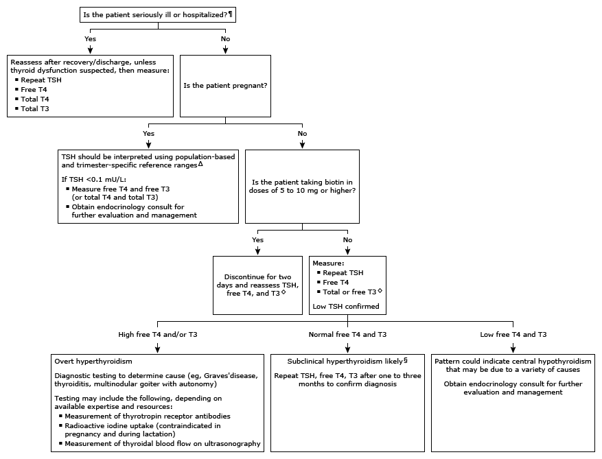

Initial evaluation of low TSH* in adults (not taking levothyroxine)

This algorithm is intended to be used in conjunction with additional UpToDate content on hyperthyroidism and hypothyroidism.
TSH: thyroid-stimulating hormone; T4: thyroxine; T3: triiodothyronine. * The normal range for TSH in nonpregnant adults is approximately 0.5 to 4 mU/L. Interpretation of a specific abnormal test result should be based upon the reference range reported with that result. ¶ In general, TSH should not be assessed in seriously ill patients unless there is a strong suspicion of thyroid dysfunction, since there are many other factors in acutely or chronically ill euthyroid patients that influence TSH secretion and thyroid function tests. If measurement is necessary, assays that have a detection limit of 0.01 mU/L should be used to assess thyroid function. Δ Diagnosis of true hyperthyroidism during pregnancy may be difficult because of the changes in thyroid function that occur during normal pregnancy. Overt hyperthyroidism during pregnancy is characterized by suppressed (<0.1 mU/L) or undetectable (<0.01 mU/L) serum TSH value and a free T4 and/or free T3 (or total T4 and/or total T3) measurement that exceeds the normal range for pregnancy. Refer to UpToDate content on thyroid disease in pregnancy. ◊ In women taking estrogen, measure free T3 (rather than total T3) as estrogens increase thyroid binding globulin, which may result in high total T3 but not free T3 levels. § Other, less likely causes of low TSH with normal free T4 and T3 in the ambulatory setting include central hypothyroidism, recovery from hyperthyroidism, and glucocorticoid exposure (>20 mg/day prednisone or its equivalent).